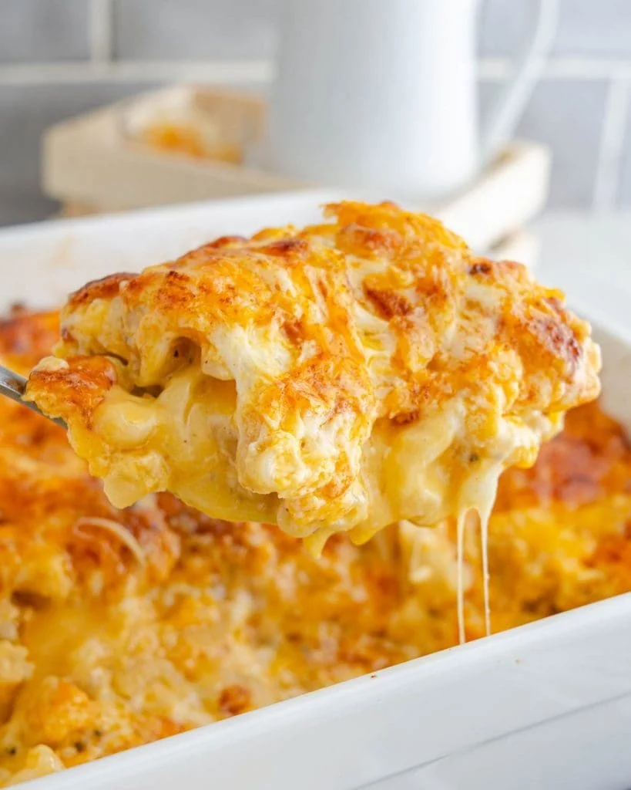

Macaroni and Cheese

Description
A classic, homemade, mac and cheese recipe. Plenty of cheese while keeping it simple. Enjoy bringing the centerpiece of your next family gathering with this amazing dish.
Ingredients
- Flour - 2 tablespoons
- Butter - 2 tablespoons
- Milk - 2 cups
- Salt - 1/2 teaspoon
- Ground Pepper - 1/4 teaspoon
- Elbow Paste Noodles - 16 ounces
- Extra Sharp Cheddar Cheese - 6-8 ounces shredded
- Mozzerella Cheese - 6-8 ounces shredded
Directions
-
In a moderate sized saucepan, set heat to medium-low and add butter
- Preheat milk in microwave for 2 minutes
- After butter is melted, slowly add flour and mix
- Continue to stir and heat for 1-2 minutes until slightly browned
- Slowly add milk about 1/2 a cup at a time. Continue to stir and give time for sauce to thicken
- Continue to cook and stir until bubbles form in the sauce. Cook about 2 minutes longer
- Add salt and pepper to sauce
- Add 6-8 ounces of cheese to taste and consistency desired. Cheddar for more color and flavor. Mozzerella for thickening and consistency
- Reduce heat to low
- In a separate pot, bring about 6 cups of water to a boil
- Add pasta to water and continue to boil for about 8 minutes
- Drain water from pasta and add the pasta to sauce
- Mix thoroughly
- In an 8 by 10 baking dish, add half of the pasta and sauce mixture
- Spread the remainder of the mozzerella cheese onto the dish
- Add the rest of the pasta and sauce to the dish
- Spread the remainer of the cheddar cheese onto the macaroni
- Chill until needed or proceed to baking
- Bake at 400 F for 20 minutes or until cheese is golden brown
Home